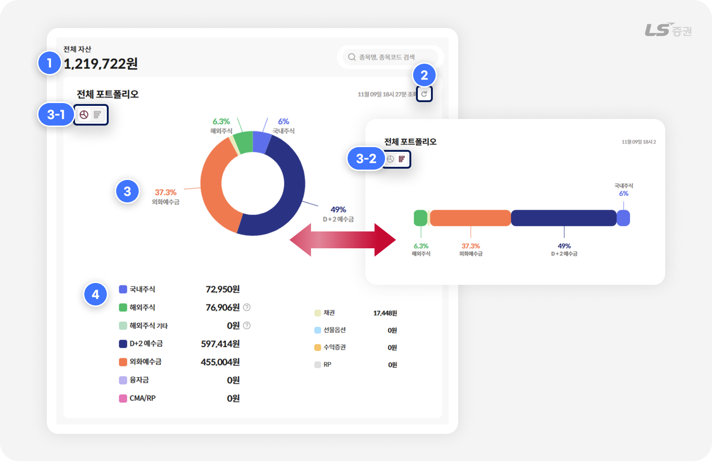
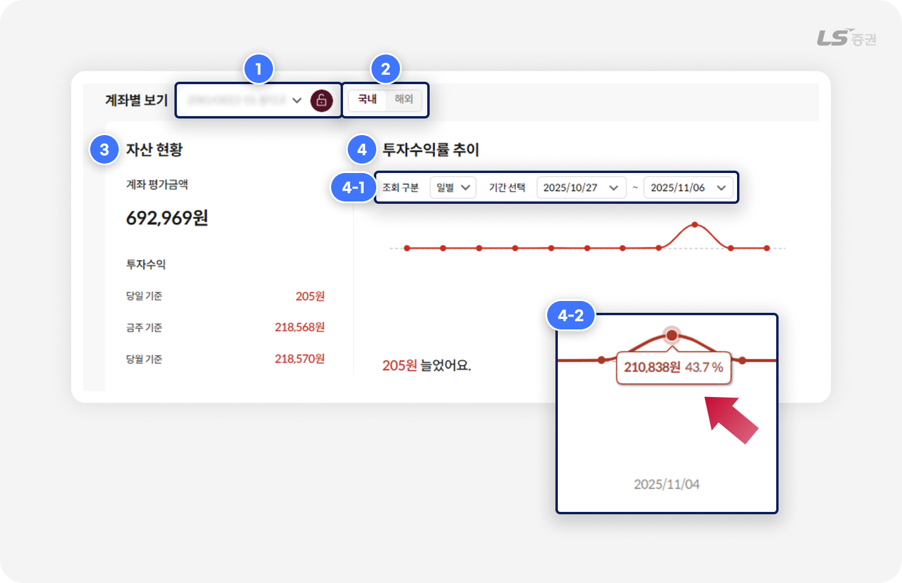
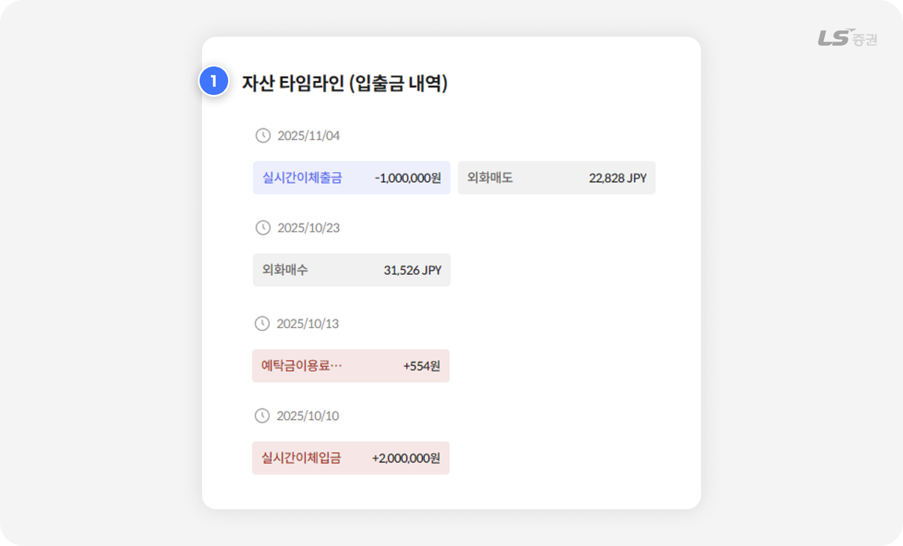
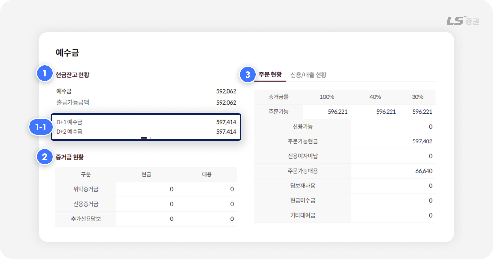
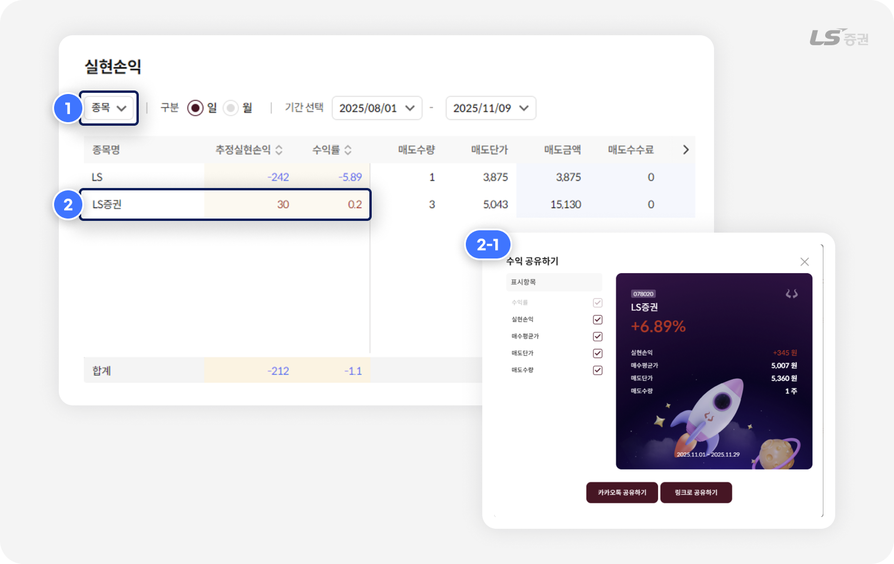

.png)
[WTS] 자산
모든 계좌의 현재를 한눈에,
투자 현황의 중심
투자 자산의 모든 현황, 한 화면에서 종합 관리
WTS 자산 화면은 투자 계좌의 현황을 종합적으로 파악할 수 있는 중심 허브입니다.
국내외 주식, 선물옵션, 예수금 등 다양한 자산을 하나의 화면에서 통합 조회할 수 있으며, 평가금액, 수익률, 잔고 변화 등 주요 지표를 실시간으로 확인할 수 있습니다. 계좌별 세부 내역도 손쉽게 조회할 수 있어, 투자 포트폴리오의 균형을 점검하는 데 유용합니다.
이번에는 자산 화면에서 자주 확인하는 주요 메뉴를 살펴보겠습니다.
잔고 확인부터 거래 준비까지
이 화면이 내 자산 관리에 유익한 이유!
| 특징 | 이런 점이 좋아요 |
|---|---|
| 통합 자산 그래프 | 예수금, 주식, 외화예수금 등 자산 비중을 그래프로 한눈에 시각화 |
| 계좌별 자산 관리 | 목적별 구분된 계좌 단위로 자산 증감 및 투자수익을 명확하게 확인 |
| 거래 내역 제공 | 입출금, 매매 내역 등 시간 흐름에 따른 자산 변화를 조회 |
| 예수금 · 신용 관리 | 주문가능금액, 증거금 등으로 주문 여력 판단 가능 |
내 투자 자산 지도를 보여주는
01 전체 포트폴리오

-
1
전체 자산 조회
- 보유 계좌의 전체 자산을 합산한 금액을 조회합니다.
-
2
자산 조회 새로고침
- 새로고침 버튼을 선택하면 마지막 조회일시가 갱신되며 최근 자산 현황을 재조회합니다.
-
3
자산 그래프 전환
- 자산 비중을 시각화한 그래프의 표시 방법을 도넛형(3-1번), 막대형(3-2번) 중 선택할 수 있습니다.
-
4
자산 유형별 보유금액 현황
- 주식, 예수금, 파생상품 등 여러 계좌에 분산된 자산을 유형별로 모은 금액 합계를 한눈에 확인할 수 있습니다.
참고해주세요!
- ‘해외주식' 자산은 온라인 매매 가능 국가(미국, 홍콩, 일본) 보유 주식의 합계입니다.
- ‘해외주식 기타' 자산은 오프라인 매매 가능 국가(중국, 기타 국가) 보유 주식의 합계입니다.
자산의 운용 방향을 점검하는
02 계좌별 자산/투자수익률

-
1
계좌 선택
- 보유 계좌 중 활성화된 계좌를 선택할 수 있습니다.
-
2
종목 선택
- 국내주식 / 해외주식 중 조회하려는 종류를 선택할 수 있습니다.
-
3
자산 현황 조회
- 선택 계좌의 평가금액과 일/주/월 기준 투자수익금을 확인할 수 있습니다.
-
4
투자수익률 추이 조회
- 일정 기간 수익률의 변화를 시각화한 그래프를 확인할 수 있습니다.
- (4-1번) 투자수익률의 조회 주기와 기간을 설정할 수 있습니다.
- (4-2번) 일별 시점에 마우스를 올리면 해당일의 수익금액과 수익률을 조회할 수 있습니다.
미세한 자산 흐름까지 포착하는
03 입출금 내역

-
1
자산 타임라인
- 선택 계좌의 입출금 내역을 일별로 확인할 수 있습니다.
- 출금은 파란색, 입금은 빨간색, 환전 등 기타 입출금은 회색으로 표시됩니다.
투자의 든든한 버팀목
04 예수금

-
1
현금잔고 현황
- 현금 기준 예수금 및 출금가능금액 합계를 조회합니다.
- (1-1번) D+1 예수금, D+2 예수금과 D+1 출금가능금액, D+2 출금가능금액을 전환하며 조회할 수 있습니다.
-
2
증거금 현황
- 주문 전 거래 이행을 담보로 예치한 증거금 현황을 조회합니다.
-
3
주문 현황, 신용/대출 현황
- 신용거래 및 담보대출 정보를 종합적으로 확인할 수 있습니다.
참고해주세요!
- 실시간 인기, 시가총액상위, 이달의 신규상장종목 시세는 KRX 기준 시세만 제공됩니다.
나의 투자 여정을 진단하는
05 실현손익

-
1
실현손익 집계기준 선택
- 종목별 혹은 일자별 기준으로 추정실현손익, 수익률, 매도/매수 내역을 집계 조회할 수 있습니다.
-
2
수익 공유
- 종목 혹은 날짜 선택 시, 원하는 항목을 선택하여 카카오톡 혹은 웹에 링크로 투자 성과를 공유할 수 있습니다.
WTS 자산 화면에서 예수금과 잔고를 파악하는 다양한 방법을 알아보았습니다.
좋은 전략은 내 상황을 파악하는 데서 시작됩니다. 현재의 자산과 지금까지의 운용 이력에서 더 나은 전략의 방향을 세울 수 있기를 바랍니다. 감사합니다!